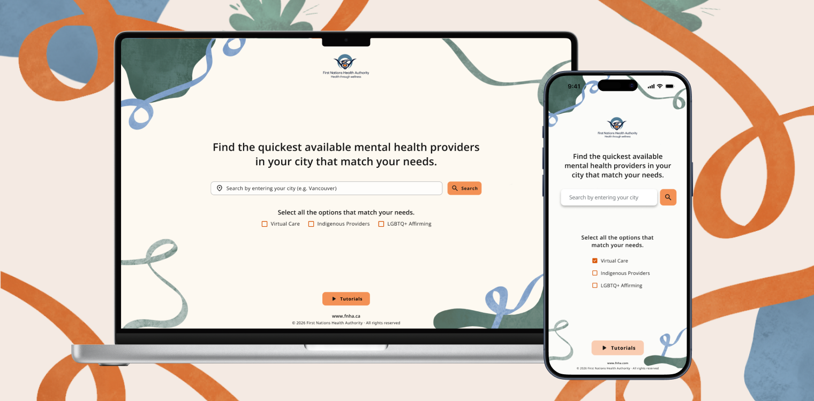
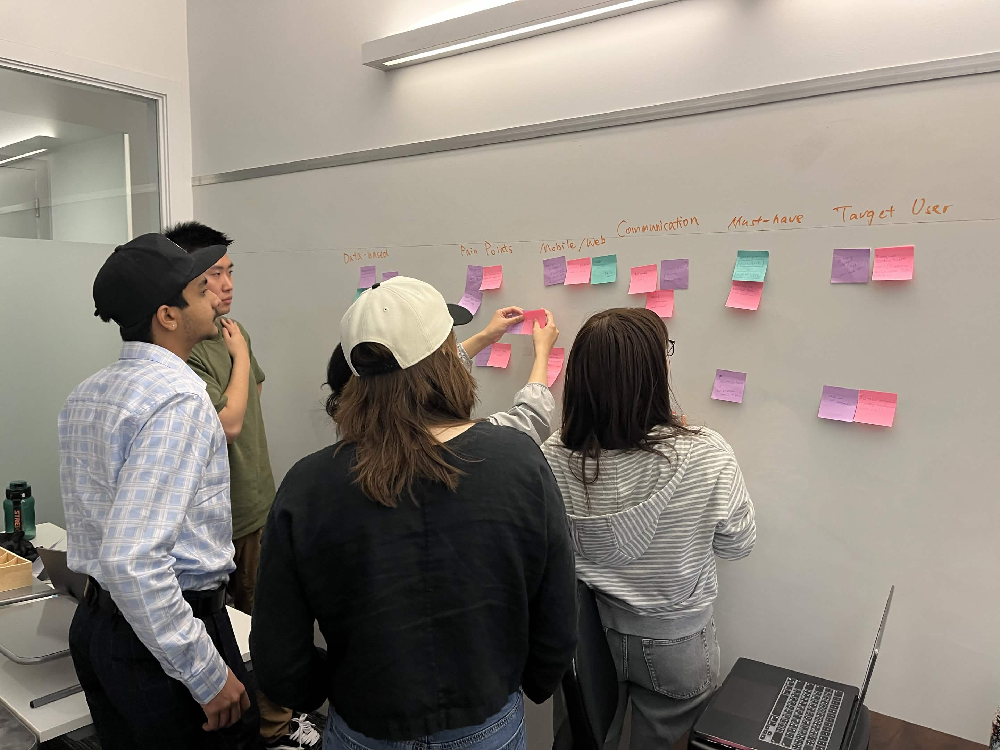
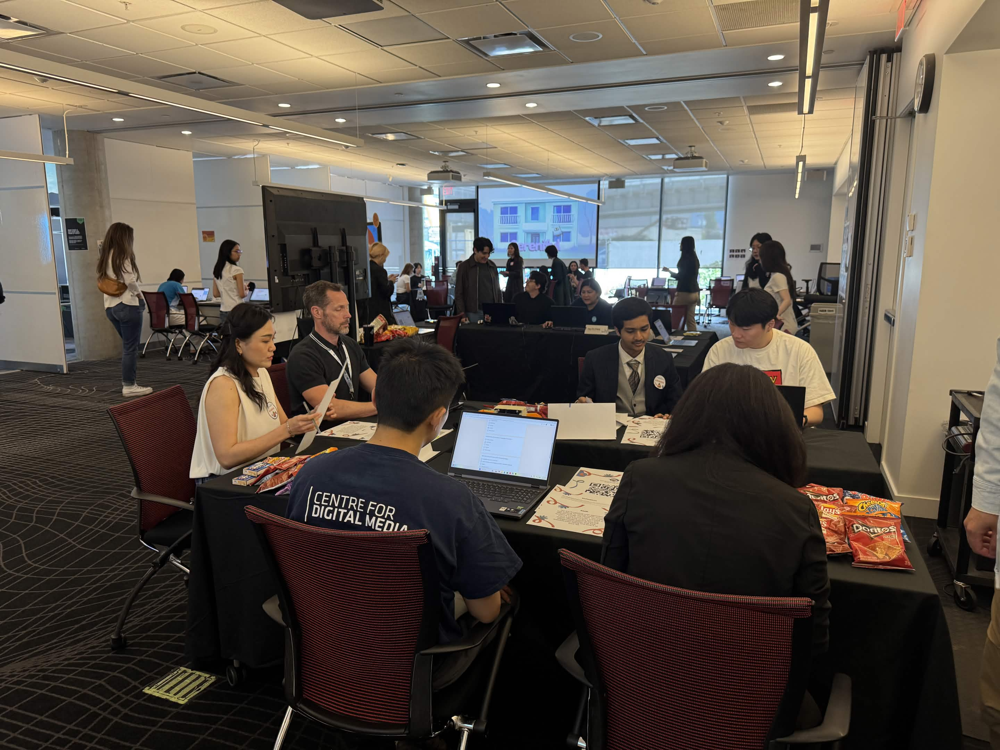

Redesigning how 150,000+ First Nations people in BC find culturally safe mental health care.
FNHA's mental health provider directory was a 2,400-row spreadsheet and a Google Map with overlapping pins: comprehensive, but not usable. Our team redesigned it as a mobile-first platform that lets people search and filter by what actually matters to them — cultural safety, availability, language, and identity — instead of scrolling through unfamiliar clinical terminology.
As one of two UX/UI designers on Team Trestle, I helped shape the desktop wireframes and design system behind the experience, validated across two rounds of usability testing with 38 total participants before handoff to FNHA.

The First Nations Health Authority provides mental health benefits to over 150,000 eligible Status First Nations people across BC, through a directory of 2,400+ registered counsellors. The gap isn't only digital — 47% of off-reserve First Nations people needed mental health care in the past year, and only 28% had their needs fully met. Interviews with FNHA staff echoed the data: some people don't know the benefit exists at all, remote communities struggle to access the directory in the first place, and even people who find it get stuck on professional designations — RCC, CCC, RSW — that mean nothing to someone searching for help.
Underneath the usability problems sat something harder to design for: trust. Historical trauma from residential schools and Indian Hospitals shapes how many people approach healthcare systems, and nearly a quarter of off-reserve First Nations people report experiencing discrimination in healthcare settings. A faster search bar wouldn't fix that on its own — the experience itself had to feel safe before it could feel usable.
"How might we help FNHA users quickly discover and confidently choose a mental health provider that matches their needs, while reducing cognitive load and making the search experience intuitive and culturally supportive?"
Each of the six team members owned a different research lens — Indigenous language and health outcomes, on-reserve broadband access, digital literacy, healthcare discrimination — so our direction came from a shared, multi-dimensional picture instead of one person's assumptions.
Those findings confirmed that clarity and trust mattered as much as performance, which led us to design a guided landing experience rather than dropping users straight into a search bar.

An internal comparison test at the Centre for Digital Media, pitting a Figma prototype against a parallel build in Lovable.
People didn't understand provider designation codes (RCC, CCC, RSW), several missed the map/list toggle entirely, and provider cards read as overloaded with information.
Designation codes got plain-language labels and tooltips, and provider cards were trimmed down to the fields people actually scanned for first.
An external round at the CDM Testing Showcase with 33 participants.
An 85% task completion rate and 8+/10 ratings on navigation and clarity — but people still expected a Google-like unified search bar, and selecting multiple filters within one category returned zero results instead of broadening the search.
The search bar collapsed into a single unified field, and filter logic within a category switched to broaden results instead of narrowing them to nothing.

Before wireframing, two groups explored two directions in parallel: enhancing the existing Google Maps embed with better filters, or building a standalone platform. The standalone platform won — more ownership of the experience and room to design the system end to end, even at the cost of more build effort.
Wireframing split by platform: I designed and refined the desktop wireframes and design system — colors, typography, reusable UI components — that both the desktop and mobile builds were built on, before handing off for development.
Help people narrow 2,400+ providers down to the ones that actually match their needs, without reading a 2,400-row spreadsheet.
Let people compare providers and come back to a decision later, without re-searching or holding everything in their head.
Give FNHA staff ownership of their own data after handoff, instead of routing every update through the development team.
This feature wasn't in the original brief — it surfaced mid-build, once the dev team discovered provider data was being hand-updated through a monthly PDF from another FNHA team entirely.
As one of two UX/UI designers on the team, I worked across research and personas, led the desktop wireframes, and built the design system — color palette, typography, iconography — that carried through to development.
Provider Directory reshaped how I think about scope: an admin portal nobody asked for in the brief ended up mattering as much to the real user experience as anything on the public-facing screens, because it's what lets FNHA keep this directory alive after we're gone.